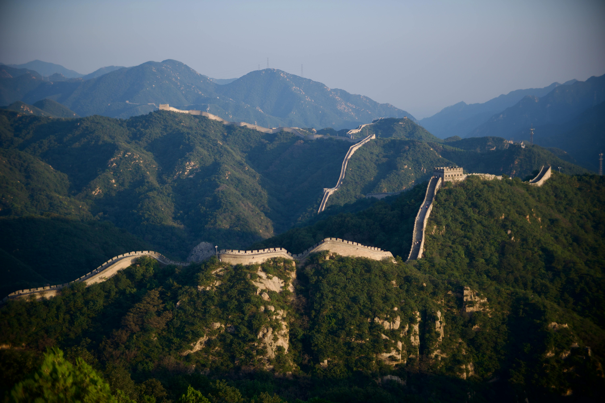
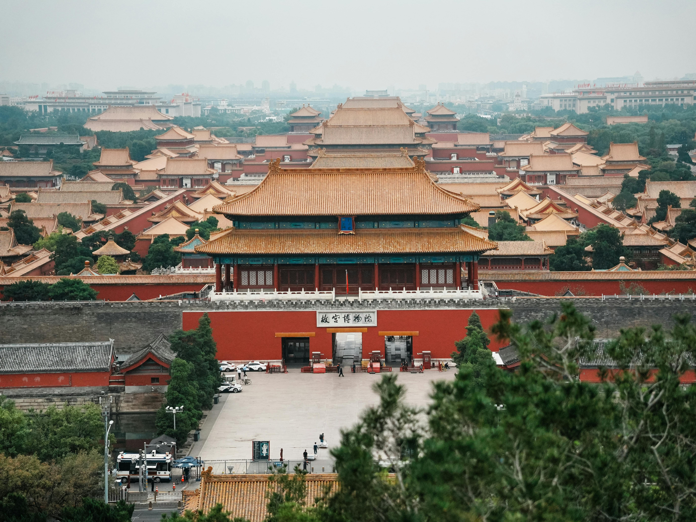

China’s ancient architectural heritage stands as a powerful testament to the advanced scientific knowledge and technological innovation achieved by Chinese civilization. Long before the modern age, Chinese architects and engineers applied principles of natural science—such as physics, mathematics, geology, astronomy, and environmental science—to construct enduring structures that continue to inspire admiration today. These architectural achievements not only fulfilled practical and aesthetic purposes but also reflected a deep understanding of nature and harmony between humanity and the environment.

Ancient Chinese architectural heritage
One of the most remarkable examples of ancient Chinese architecture is the Great Wall of China. Built over several dynasties, it demonstrates exceptional engineering skills and scientific planning. The wall’s design reflects knowledge of terrain analysis, material science, and structural mechanics. Builders selected construction materials—such as tamped earth, bricks, and stones—based on local geological conditions, ensuring durability and stability. The wall’s alignment along mountain ridges shows a sophisticated understanding of topography and defensive strategy, minimizing structural stress while maximizing protection.

The Great Wall of China across mountainous terrain
Traditional Chinese wooden architecture, seen in structures such as the Forbidden City, also reflects scientific ingenuity. Ancient builders mastered complex joinery techniques without using nails, relying instead on precise measurements, geometry, and the mechanical properties of wood. The use of the dougong (bracket system) provided flexibility and shock absorption, making buildings more resistant to earthquakes. This reveals an advanced awareness of structural physics and seismic forces.
Traditional wooden architecture of the Forbidden City
Another outstanding achievement is the Dujiangyan Irrigation System, constructed during the Qin Dynasty over 2,000 years ago. This project is a masterpiece of hydraulic engineering and applied natural science. Unlike conventional dams, Dujiangyan works in harmony with natural water flow, using principles of hydrodynamics to prevent flooding and distribute water efficiently. Its continued operation today highlights ancient China’s advanced understanding of river behavior, sediment control, and sustainable environmental management.
Ancient Chinese architecture is far more than a collection of impressive buildings; it is a living record of China’s outstanding achievements in natural science. Through innovative engineering, environmental harmony, and scientific precision, these architectural wonders illustrate how ancient Chinese civilization integrated scientific understanding into daily life. Promoting these achievements not only honors historical ingenuity but also provides valuable inspiration for modern sustainable design and scientific advancement.